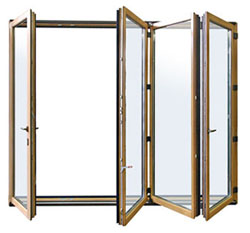

Складные раздвижные двери (гармошка) предоставляют возможность открывать остекленные фасадные проемы больших площадей, тем самым, похожи на трансформируемую стену.Такие двери легко складываются гармошкой, получается небольшой пакет, который можно легко сдвинуть в сторону.
Пожалуй, наиболее интересны с конструктивной точки зрения подъемно-раздвижные двери. При открывании такой двери ее полотно приподнимается на 10-15 мм, после чего его легко откатить в сторону.
Подъем полотна происходит за счет того, что при повороте управляющей ручки на 180° из его нижнего торца выдвигаются и становятся на направляющую шину опорные роликовые каретки.
Когда дверь закрыта, полотно опущено и прилегает к коробке через два контура уплотнителей, а верхний и нижний запорные штыри (шпингалеты) входят в отверстия в коробке.
Механизм позволяет опустить полотно в любом месте по ходу движения.
При этом оно будет зафиксировано собственным весом, а запорные штыри не выдвинутся благодаря наличию блокирующего механизма.
В качестве входных дверей в домах раздвижные конструкции могут быть установлены лишь в редких случаях - например, в тщательно охраняемых поселках.
Чаще они служат для выхода на улицу с остекленной отапливаемой террасы или из пристроенного к дому зимнего сада (таким способом организуют сообщение с внутренней территорией участка). В городе подобные двери используют главным образом в качестве балконных.
Раздвижные окна и двери не следует устанавливать до окончания работ, при которых образуется большое количество бетонной пыли: штрабления, расширения дверных проемов и т. п. Подвижные детали очень плохо переносят загрязнение частицами кремния.
Срок их службы при этом многократно сокращается, и проблемы (затрудненное движение, шум подшипников) возникают уже через год.
Если абразив все же попал в механизм, последний лучше снять и промыть горячим минеральным маслом.
{kind=link}
{kind=link}
{kind=link}
{kind=link}